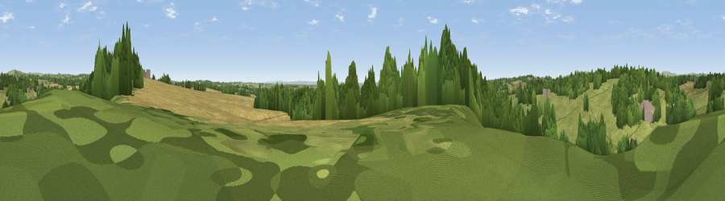

Viewpoint near Shirley
#30297 in England · top 46% of its area beats it · near ShirleyThe view, rendered

A 360° render of this exact spot computed from the terrain model, tree cover and land cover — summer colours, afternoon light, calibrated against photographs of famous viewpoints. Real trees, hedges and buildings will differ in detail.
The panorama
Grey silhouette: terrain skyline in each direction (720 bearings, Earth curvature and refraction included). Dashed green: skyline with trees (+15 m) and buildings (+8 m) as obstacles. Blue strip: how far the ground is visible on each bearing.
Where the view opens
Wedge length = distance to the farthest visible ground on that bearing (vegetation-aware). Rings at 10, 25 and 50 km.
What fills the view
54% grassland · 27% woodland · 16% cropland · 2% water · 1% built-up
Angular shares of the visible panorama (visual magnitude), not map area. Landscape diversity 0.48 (0–1 Shannon).
Key numbers
More beautiful places nearby
The staircase of upgrades: each row has a higher view potential than everything closer. Driving times are estimates from straight-line distance, calibrated against real road routing — check an actual route before setting out.
| Place | Direction | Drive | Score |
|---|---|---|---|
| Viewpoint near Shirley | ENE · 1 km | ~2 min | 55.6 |
| Viewpoint near Kniveton | N · 6 km | ~13 min | 60.5 |
| Viewpoint near Kniveton | N · 7 km | ~14 min | 65.2 |
| Viewpoint near Wootton | WNW · 11 km | ~20 min | 66.1 |
| Viewpoint near Ilam | NW · 11 km | ~21 min | 66.3 |
| Viewpoint near Wootton | WNW · 11 km | ~21 min | 74.4 |
| Tissington Hill | NNW · 11 km | ~22 min | 75.5 |
| Viewpoint near Mow Cop | WNW · 38 km | ~57 min | 78.9 |
52.98146, -1.68905 · source: screening · position refined by local search. Computed location — check access rights before visiting.